Full code: pySDC/projects/node_failure/hard_faults_detail.py
import numpy as np
import pySDC.projects.node_failure.emulate_hard_faults as ft
from pySDC.helpers.stats_helper import filter_stats, sort_stats
from pySDC.implementations.collocation_classes.gauss_radau_right import CollGaussRadau_Right
from pySDC.implementations.problem_classes.AdvectionEquation_1D_FD import advection1d
from pySDC.implementations.problem_classes.HeatEquation_1D_FD_forced import heat1d_forced
from pySDC.implementations.sweeper_classes.generic_implicit import generic_implicit
from pySDC.implementations.sweeper_classes.imex_1st_order import imex_1st_order
from pySDC.implementations.transfer_classes.TransferMesh import mesh_to_mesh
from pySDC.projects.node_failure.controller_nonMPI_hard_faults import controller_nonMPI_hard_faults
# noinspection PyShadowingNames,PyShadowingBuiltins
def main(ft_setups, ft_strategies):
"""
This routine generates the heatmaps showing the residual for a node failures at step n and iteration k
"""
num_procs = 16
# initialize level parameters
level_params = dict()
level_params['restol'] = 1E-09
# initialize step parameters
step_params = dict()
step_params['maxiter'] = 50
# initialize space transfer parameters
space_transfer_params = dict()
space_transfer_params['finter'] = True
space_transfer_params['rorder'] = 2
space_transfer_params['iorder'] = 6
# initialize sweeper parameters
sweeper_params = dict()
sweeper_params['collocation_class'] = CollGaussRadau_Right
sweeper_params['num_nodes'] = [3]
# initialize controller parameters
controller_params = dict()
controller_params['logger_level'] = 30
# choose the iteration/step where the fault should happen
ft_step = 7
ft_iter = 7
for setup in ft_setups:
if setup == 'HEAT':
# initialize problem parameters
problem_params = dict()
problem_params['nu'] = 0.5
problem_params['freq'] = 1
problem_params['nvars'] = [255, 127]
level_params['dt'] = 0.5
space_transfer_params['periodic'] = False
# fill description dictionary for easy step instantiation
description = dict()
description['problem_class'] = heat1d_forced # pass problem class
description['problem_params'] = problem_params # pass problem parameters
description['sweeper_class'] = imex_1st_order # pass sweeper (see part B)
description['sweeper_params'] = sweeper_params # pass sweeper parameters
description['level_params'] = level_params # pass level parameters
description['step_params'] = step_params # pass step parameters
description['space_transfer_class'] = mesh_to_mesh # pass spatial transfer class
description['space_transfer_params'] = space_transfer_params # pass paramters for spatial transfer
# setup parameters "in time"
t0 = 0.0
Tend = 8.0
elif setup == 'ADVECTION':
# initialize problem parameters
problem_params = dict()
problem_params['c'] = 1.0
problem_params['nvars'] = [256, 128]
problem_params['freq'] = 2
problem_params['order'] = 2
level_params['dt'] = 0.125
space_transfer_params['periodic'] = True
# fill description dictionary for easy step instantiation
description = dict()
description['problem_class'] = advection1d # pass problem class
description['problem_params'] = problem_params # pass problem parameters
description['sweeper_class'] = generic_implicit # pass sweeper (see part B)
description['sweeper_params'] = sweeper_params # pass sweeper parameters
description['level_params'] = level_params # pass level parameters
description['step_params'] = step_params # pass step parameters
description['space_transfer_class'] = mesh_to_mesh # pass spatial transfer class
description['space_transfer_params'] = space_transfer_params # pass paramters for spatial transfer
# setup parameters "in time"
t0 = 0.0
Tend = 2.0
else:
raise NotImplementedError('setup not implemented')
# loop over all stategies and check how things evolve
for strategy in ft_strategies:
print('Working on setup %s with strategy %s..' % (setup, strategy))
ft.strategy = strategy
ft.hard_step = ft_step
ft.hard_iter = ft_iter
controller = controller_nonMPI_hard_faults(num_procs=num_procs, controller_params=controller_params,
description=description)
# get initial values on finest level
P = controller.MS[0].levels[0].prob
uinit = P.u_exact(t0)
# call main function to get things done...
uend, stats = controller.run(u0=uinit, t0=t0, Tend=Tend)
# stats magic: get iteration counts to find maxiter/niter
extract_stats = filter_stats(stats, level=-1, type='niter')
sortedlist_stats = sort_stats(extract_stats, sortby='process')
niter = max([item[1] for item in sortedlist_stats])
print('Iterations:', niter)
residual = np.zeros((niter, num_procs))
residual[:] = -99
# stats magic: extract all residuals (steps vs. iterations)
extract_stats = filter_stats(stats, type='residual_post_iteration')
for k, v in extract_stats.items():
step = k.process
iter = k.iter
if iter is not -1:
residual[iter - 1, step] = np.log10(v)
print('')
np.savez('data/' + setup + '_steps_vs_iteration_hf_' + strategy, residual=residual, ft_step=ft.hard_step,
ft_iter=ft.hard_iter)
if __name__ == "__main__":
ft_strategies = ['NOFAULT', 'SPREAD', 'SPREAD_PREDICT', 'INTERP', 'INTERP_PREDICT']
# ft_setups = ['ADVECTION', 'HEAT']
# ft_strategies = ['NOFAULT']
ft_setups = ['HEAT']
main(ft_setups=ft_setups, ft_strategies=ft_strategies)
Results (visualized by postproc_hard_faults_detail):
Heat equation:
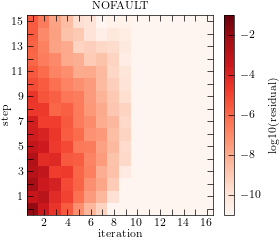 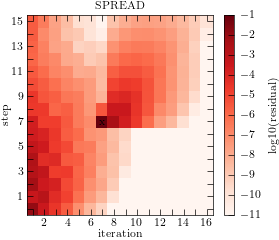 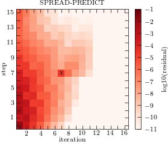 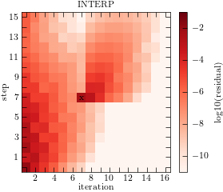 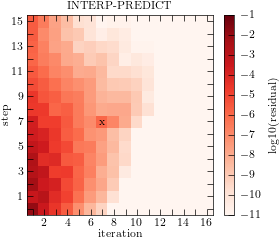 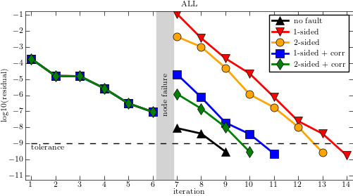{kind=link}
{kind=link}
{kind=link}
{kind=link}
{kind=link}
{kind=link}
Advection equation:
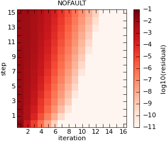 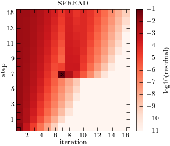 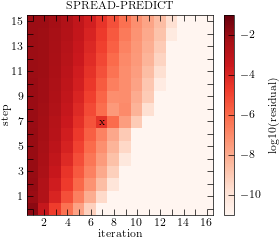 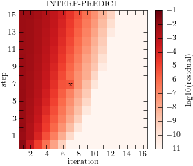 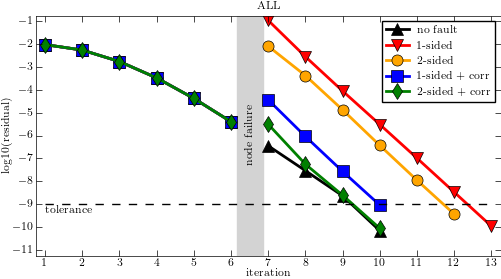{kind=link}
{kind=link}
{kind=link}
{kind=link}
{kind=link}
{kind=link}